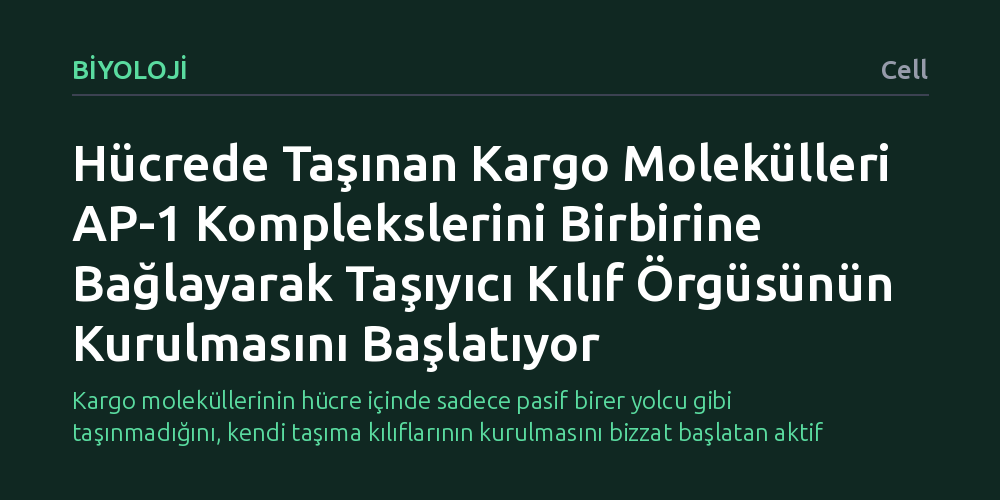

BIYOLOJI · Cell · 2026-10-12
Hücre içi taşımada kargo moleküllerinin pasif bir yük mü yoksa taşıma kılıfını aktif olarak örgütleyen bir unsur mu olduğu araştırıldı. Kriyojenik elektron mikroskopisi ve zebra balığı deneyleri, ardışık sıralama dizilimine sahip kargoların AP-1 kompleksleri arasında köprü kurarak kılıf oluşumunu doğrudan tetiklediğini gösterdi.
Kargo moleküllerinin hücre içinde sadece pasif birer yolcu gibi taşınmadığını, kendi taşıma kılıflarının kurulmasını bizzat başlatan aktif aktörler olduğunu kanıtlıyor.

Hücrelerimiz devasa ve son derece düzenli bir lojistik ağına sahiptir. Proteinler, enzimler ve lipidler hücre içinde rastgele serbestçe dolaşmak yerine vezikül adı verilen küçük zar kesecikleri içinde taşınır. Bu keseciklerin oluşumu, zar yüzeyinde özel protein kılıflarının örülmesiyle gerçekleşir. Yıllardır hücre biyolojisinde kabul gören hâkim anlayış, taşınacak yüklerin (kargo moleküllerinin) bu süreçte tamamen edilgen olduğu yönündeydi; yani kargo sadece paketin içine konulan nesneydi ve taşıyıcı kılıf proteinleri işi kendi başına yürütüyordu.
Bu çalışma tam olarak şu sorunun peşine düşüyor: Hücre içinde bir noktadan diğerine ulaştırılacak kargo molekülleri gerçekten sadece pasif birer yolcu mudur, yoksa kendilerini taşıyacak keseciğin kılıfının kurulmasında bizzat aktif bir rol oynarlar mı? Eğer kargo molekülleri taşıma kılıfının inşasını doğrudan başlatıyorsa, bu durum hücrenin lojistik trafiğini ve moleküler mimarisini yöneten temel modeli kökten netleştirecektir.
Araştırmacılar bu soruyu aydınlatmak için iki aşamalı ve birbirini tamamlayan bir yaklaşım benimsedi. İlk aşamada, biyolojik moleküllerin doğal hallerinde dondurularak yüksek çözünürlükte incelenmesini sağlayan kriyojenik elektron mikroskopisi (kriyo-EM) tekniği kullanıldı. Bu yapısal biyoloji yöntemi sayesinde, adaptör protein 1 (AP-1) kompleksleri ile taşınan kargo molekülleri arasındaki atomik düzeydeki fiziksel etkileşimler doğrudan görüntülendi.
İkinci aşamada ise moleküler düzeyde keşfedilen bu etkileşimin canlı bir organizmada işlevsel bir karşılığı olup olmadığını test etmek amacıyla zebra balığı (Danio rerio) embriyoları model olarak kullanıldı. Canlı organizmada yürütülen genetik ve gelişimsel incelemelerle, kargo moleküllerinin taşıma ağındaki rolünün sinir sistemi ve nöronal gelişim üzerindeki somut etkileri takip edildi.
Elde edilen bulgular, kargoların pasif yolcular olduğu kabulünü doğrudan değiştirdi. Kriyo-EM analizleri, üzerinde ardışık sıralama motifleri barındıran kargo moleküllerinin birden fazla AP-1 adaptör kompleksi arasında moleküler köprüler kurduğunu ortaya çıkardı. Kargo molekülü, iki farklı AP-1 kompleksini aynı anda bağlayarak onları bir araya getirmekte ve böylece kılıf proteinlerinin yüksek mertebeli bir örgü (kafes yapısı) oluşturmasını doğrudan tetiklemektedir.
Yazarların belirttiği üzere, geleneksel yaklaşımda "kargo kılıf aracılı taşımanın pasif bir alt tabakası" olarak görülüyordu. Oysa bu çalışma, kargonun adaptörleri çapraz bağlayarak adeta bir çekirdeklenme merkezi işlevi gördüğünü kanıtladı. Ortamda taşınacak kargo bulunmadığında kılıf örgüsü verimli biçimde bir araya gelememekte; kargo belirdiğinde ise kılıf montajı derhal başlatılmaktadır.
Bu moleküler mekanizmanın biyolojik önemi, zebra balığı deneyleriyle kesinleşti. Kargo aracılı bu adaptör kümelenmesi engellendiğinde, hücre içi vezikül trafiğinin aksadığı ve bunun sonucunda balık embriyolarında sinir sistemi (nöronal) gelişiminin ciddi biçimde bozulduğu gözlemlendi. Bu durum, kargonun tetiklediği kılıf montajının sadece izole bir biyokimyasal olay olmadığını, karmaşık dokuların sağlıklı gelişimi için vazgeçilmez bir fizyolojik süreç olduğunu gösterdi.
Sonuç olarak çalışma, hücre içi taşımacılıkta kargo ile taşıyıcı kılıf arasındaki ilişkiyi yeniden tanımlıyor. Hücre, boş kesecikler üretip enerjisini israf etmek yerine, taşıma aracının montajını doğrudan taşınacak yükün varlığına bağlayan zarif bir kalite kontrol ve verimlilik mekanizması işletmektedir.